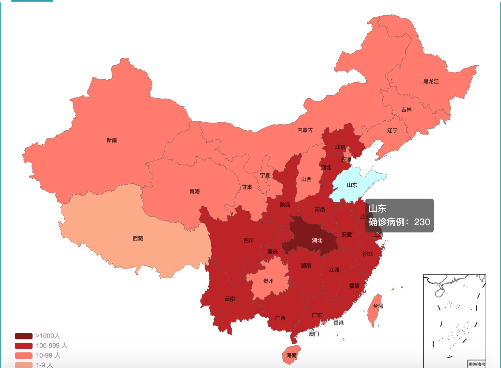

今天是2020年的02月02号，在中国的土地上，现在大家都已经人人在家，路上行人稀疏，人人戴着口罩，大部分人都没有去工作，这个年大家过的很平静，就连炮竹声都是那样稀疏，因为有那个新冠状肺炎。
我觉得事情可能是人们吃蝙蝠吃的，也许是美国跟中国搞竞争在军运会后下的毒，但是这场疫情是拜年罕见，从新中国建国挨饿到现在都没有出现过，比非典还要严重，这场疫情注定要被记入史册。
如果是平时过年大家都已经去上班了，因为疫情改成了现在的这样远程办公，所有学生推迟了上学时间，所有工人推迟了上班时间，商店都关了门，前段时间抢口罩，后来听说了双黄连口服液能对这样的病有疗效，然后大家又在疯狂的抢双黄连口服液，超市定时开门，路上人烟稀少，人人在家。
美国前两天说研究出了疫苗，然后特朗普发文说在跟中国进行疫情攻克协商，中国举国上下都在紧张的氛围中，疫情最严重的地方是武汉，病情由武汉发源，现在疫情最严重的也是武汉，今天习大大正式任命武汉的医院全部由军队的生化方面部队去研究和治疗病人。
不知道别人会怎么想，在我看来病情基本会得到控制。
还记得温家宝在汶川地震的时候，说过一句话：多难兴邦。相信2020年经过这样一场疫情的洗礼，我们会认识到自己在很多方面的不足，我们会不忘初心，继续前行，也相信国家会越来越强大，一场疫情打不倒我们，这场战役我们终将胜利。
作为祖国的一份子，努力去做好自己的工作，做好自己应该做的事，在家不出门就可以为祖国做贡献，嘻嘻........

努力吧，少年，先强大了你自己才能去帮助那些需要帮助的人........
做一个有能力向世界表达善意的人
----------------------------------------2020年02月02号----------------------------------------
----------------------------------------山东省邹平市----------------------------------------